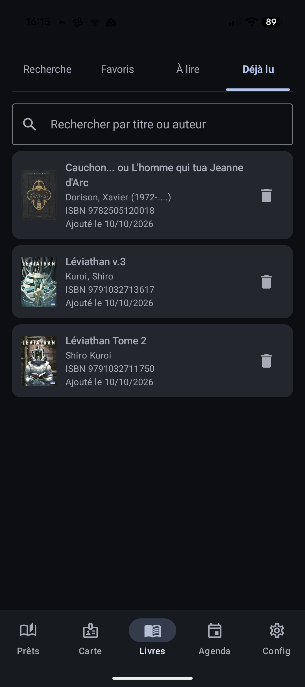

« Déjà lu » : ne plus reprendre un livre par oubli
« Ce livre-là… je l'ai peut-être déjà eu ? » Fini les hésitations : Biblio Cuers garde le souvenir des livres que vous avez empruntés.
En pratique
- Chaque livre que vous empruntez est ajouté automatiquement à la liste « Déjà lu », avec sa date d'ajout.
- La liste conserve le titre, l'auteur et la couverture du livre, comme un petit carnet de lectures.
- Au rayon, un coup d'œil suffit pour savoir si un livre a déjà été emprunté une fois.
- Rien de définitif : un livre peut être retiré de la liste à tout moment.
Les points forts
- Un journal personnel de vos emprunts, rempli tout seul.
- Votre mémoire ne vous joue pas de tour : l'application, elle, n'oublie pas.
- Idéal pour éviter de re-emprunter un livre déjà lu, ou au contraire retrouver un titre qui vous avait plu.
